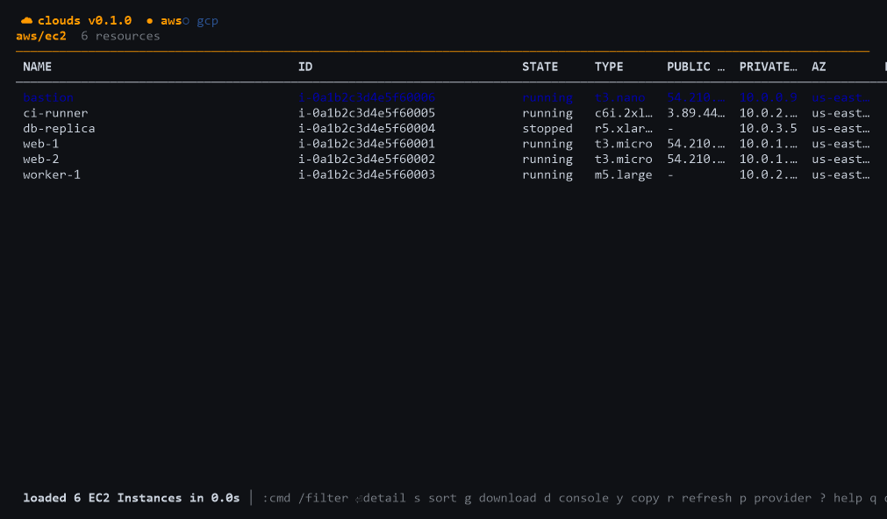
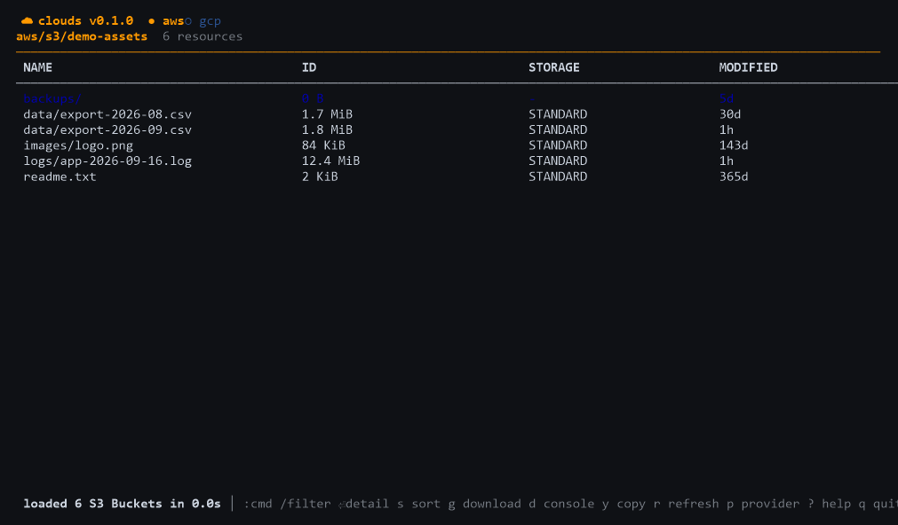
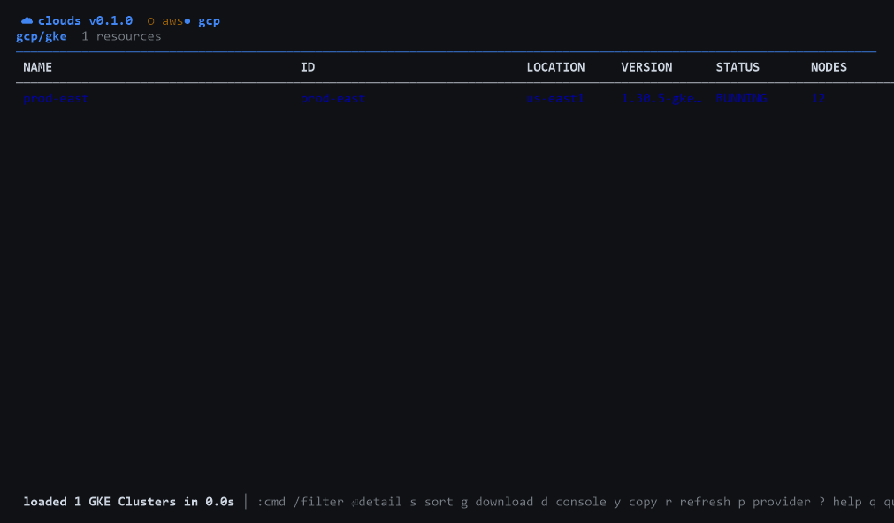
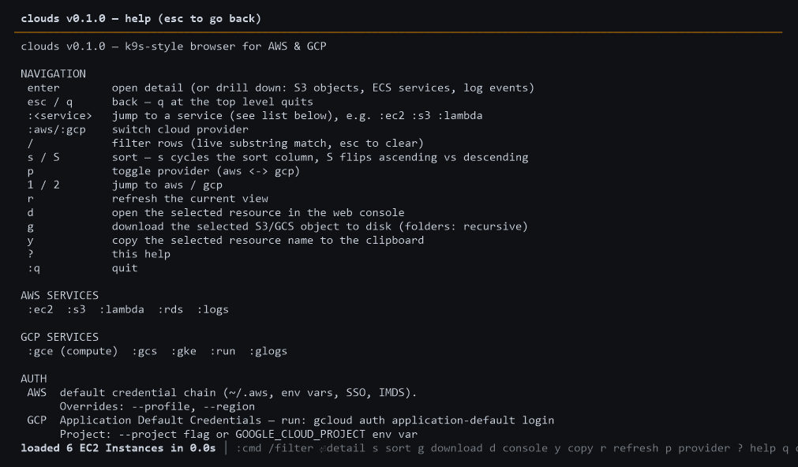

A k9s-style terminal UI for browsing AWS and GCP resources — one static binary, no runtime dependencies, no daemon.
Services return rows; the UI is generic. Filter, sort and drill into any service the same way.
Resource.Sub lazily loads children onto the nav stack — from S3 buckets straight to objects.
Every fetch runs on a goroutine; stale results are dropped before they can paint.
--all-regions sweeps every region for regional AWS services in parallel.
Adding a service means appending one cloud.Service to the catalog. --list-services prints them all.
--demo ships built-in sample data for trying the UI with zero credentials.




Or grab a zip from Releases and verify with sha256sum -c SHA256SUMS. Homebrew and Scoop manifests live in packaging/.